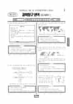

문제지

전국연합학력평가 · 시·도교육청 주관
2025년 6월 고2 학력평가 과학탐구 지구과학Ⅰ 1등급컷은 원점수 47점(추정), 표준점수 최고점은 70점입니다.
원점수 1등급컷은 공식 발표값이 아니라 EBSi·입시기관 값입니다. 등급별 값은 등급컷 표, 출처 구분은 데이터 원칙에 있습니다.

시험지를 먼저 풀어 보세요. 등급컷·표준점수·난이도는 흐리게 가려 뒀어요.
| 등급 | 원점수 | 표준점수 | 백분위 | 누적 |
|---|---|---|---|---|
| 1 | 47 | 68 | 96 | 4.92% |
| 2 | 42 | 64 | 88 | 12.22% |
| 3 | 36 | 59 | 77 | 23.31% |
| 4 | 28 | 53 | 60 | 40.55% |
| 5 | 19 | 46 | 40 | 60.56% |
| 6 | 12 | 41 | 24 | 78.46% |
| 7 | 7 | 37 | 9 | 93.04% |
| 8 | 6 | 36 | 5 | 96.68% |
등급별 컷 · 입시기관 2곳 원점수 추정 종합(EBSi·메가스터디) · 만점 50점
| 등급 | 표준점수 이상 | 인원(명) | 비율 |
|---|---|---|---|
| 1 | 68 | 3,677 | 4.92% |
| 2 | 64 | 5,455 | 7.3% |
| 3 | 59 | 8,289 | 11.09% |
| 4 | 53 | 12,881 | 17.24% |
| 5 | 46 | 14,952 | 20.01% |
| 6 | 41 | 13,373 | 17.9% |
| 7 | 37 | 10,892 | 14.58% |
| 8 | 36 | 2,719 | 3.64% |
| 9 | 31 | 2,476 | 3.31% |
시·도교육청 공개 자료
출처: 시·도교육청이 공개한 전국연합학력평가 성적 분석·통계자료(공개 자료 보기).
EBSi 응답자 기준으로 가장 많이 틀린 문항은 20번(3점)이고, 오답률은 65.4%입니다. 오답률 50%를 넘은 문항은 3개입니다.
| 순위 | 문항 | 배점 | 오답률 | 정답 | 많이 고른 오답 |
|---|---|---|---|---|---|
| 1 | 20번 | 3점 | 65.4% | ② | ⑤ 30.7% |
| 2 | 2번 | 2점 | 51.2% | ④ | ③ 17.6% |
| 3 | 17번 | 3점 | 50.7% | ④ | ② 25.9% |
| 4 | 11번 | 3점 | 48.3% | ② | ③ 17.1% |
| 5 | 16번 | 2점 | 45.4% | ② | ④ 28.8% |
| 6 | 10번 | 3점 | 39.5% | ① | ④ 22% |
| 7 | 3번 | 2점 | 38.5% | ③ | ⑤ 14.6% |
| 8 | 12번 | 3점 | 37.6% | ⑤ | ① 19.5% |
| 9 | 18번 | 3점 | 32.2% | ① | ② 11.7% |
| 10 | 9번 | 2점 | 32.2% | ① | ② 15.1% |
| 11 | 7번 | 2점 | 32.2% | ⑤ | ④ 13.7% |
| 12 | 19번 | 2점 | 29.3% | ⑤ | ④ 11.2% |
| 13 | 14번 | 2점 | 29.3% | ③ | ⑤ 12.2% |
| 14 | 5번 | 3점 | 29.3% | ② | ④ 18% |
| 15 | 4번 | 3점 | 27.3% | ① | ② 13.2% |
EBSi 가채점 응답자 기준 · 전 문항 중 오답률 상위 15문항
출처: EBSi 역대 등급컷·오답률 공개 화면. 가채점에 참여한 EBSi 이용자 응답이라 전체 응시자 정답률과는 다를 수 있습니다.
발행 기관: 시·도교육청(전국연합학력평가). 파일 위치: 이 사이트가 보관한 사본. 저작권은 발행 기관에 있습니다. 원본과 다르거나 게시 중단이 필요하면 연락처로 알려 주세요. 등급컷 출처 구분은 데이터 원칙에서 설명합니다.
막대 색은 역대 대비 난이도 · 진한 막대가 이 시험 · 막대를 누르면 그 회차로 이동
| 회차 | 1등급컷 | 표점 최고 | 1등급 표점 | 난이도 |
|---|---|---|---|---|
| 6월 학평2025년 고2이 시험 | 47 | 70 | 68 | 매우 쉬움 |
| 3월 학평2025년 고2 | 43 | 75 | 68 | 보통 |
| 10월 학평2024년 고2 | 45 | 72 | 68 | 쉬움 |
| 9월 학평2024년 고2 | 44 | 76 | 70 | 보통 |
| 6월 학평2024년 고2 | 46 | 72 | 68 | 매우 쉬움 |
| 3월 학평2024년 고2 | 48 | 68 | 67 | 매우 쉬움 |
| 11월 학평2023년 고2 | 45 | 73 | 69 | 어려움 |
| 9월 학평2023년 고2 | 44 | 73 | 68 | 어려움 |
| 6월 학평2023년 고2 | 44 | 73 | 68 | 쉬움 |
| 3월 학평2023년 고2 | 43 | 75 | 68 | 쉬움 |
지구과학Ⅰ은 교육청 채점 결과 1등급 구분 표준점수는 68점, 최고점은 70점(1,459명)이었습니다. 3월(1등급 68점, 최고점 75점)보다 최고점이 5점 내려갔고, EBSi 가채점 응답자 기준 오답률 50%를 넘은 문항은 3개였습니다.
가장 많이 틀린 20번(3점, 65.4%)은 어느 날 21시에 촬영한 우리나라 부근 위성 영상과 전선 A로, 그 영상이 가시 영상인지 적외 영상인지부터 판단해야 하는 문항이었습니다.
20번은 21시에 찍은 위성 영상이라는 조건이 출발점이었습니다. 가시 영상은 햇빛이 반사된 빛을 찍으므로 밤에는 거의 검게 나오고, 적외 영상은 구름 꼭대기의 온도를 찍어 밤에도 구름이 보입니다. 따라서 밤 9시에 구름 분포가 보이는 영상은 적외 영상이고, '가시 영상이다'라는 진술은 틀립니다.
적외 영상에서는 구름 꼭대기가 높고 차가울수록 밝게 나타나 비구름이 발달한 곳을 짐작할 수 있습니다. 전선의 종류는 기호 모양(한랭 전선의 삼각형, 온난 전선의 반원, 폐색 전선의 두 기호가 번갈아 붙은 모양)으로 판단하고, 강수 가능성은 전선과 밝은 구름대의 위치로 비교하면 됩니다.